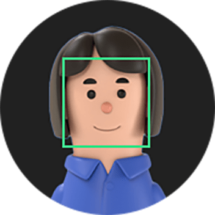
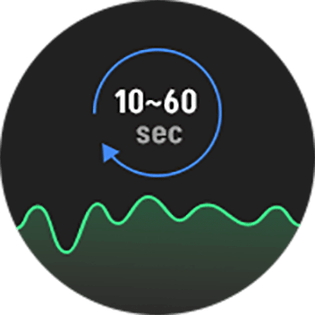

Raiseme Showcase
집중도 분석
- 집중도 분석
- 흥미도 분석
- 태도 분석
레이즈미의 집중도 분석 AI 모델은 화면을 응시하고 있는 사람의 자세, 행동, 표정 등을 분석하여 집중도를 측정합니다.

- 1준비
- 분석을 시작하기 전에 시청할 동영상을 준비해주세요.

- 2분석 시작
- 정확한 분석을 위해 모니터를 정면으로 응시하세요.
- 촬영을 위해 카메라 접근을 허용해주세요.

- 3분석 중
- 쇼케이스를 실행한 상태에서 동영상을 시청하세요.
- 분석 결과를 위해 최소 10초 이상 최대 60초 동안 시청해야 합니다.
- 4분석 완료
- 집중도를 확인하고 결과를 공유하세요.